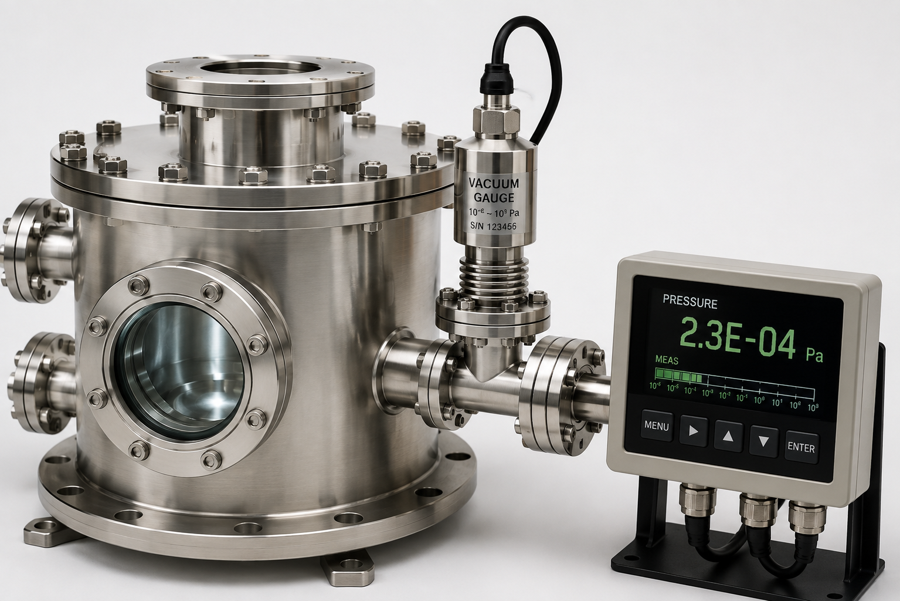
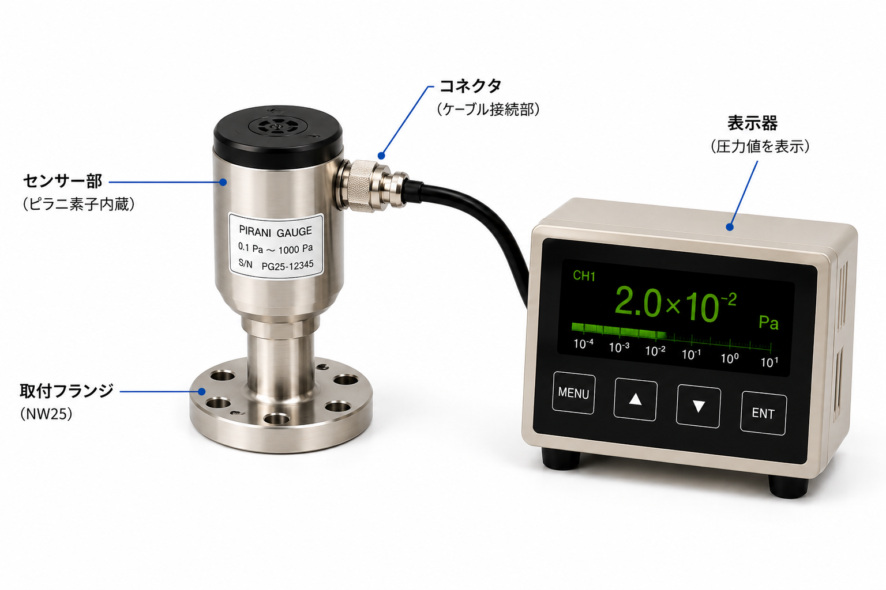
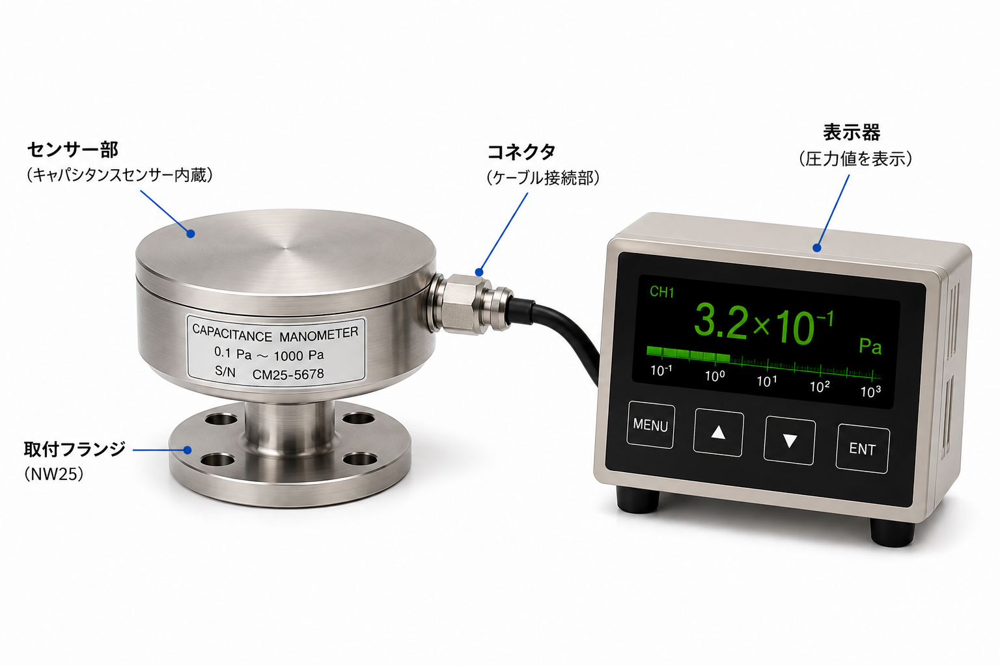
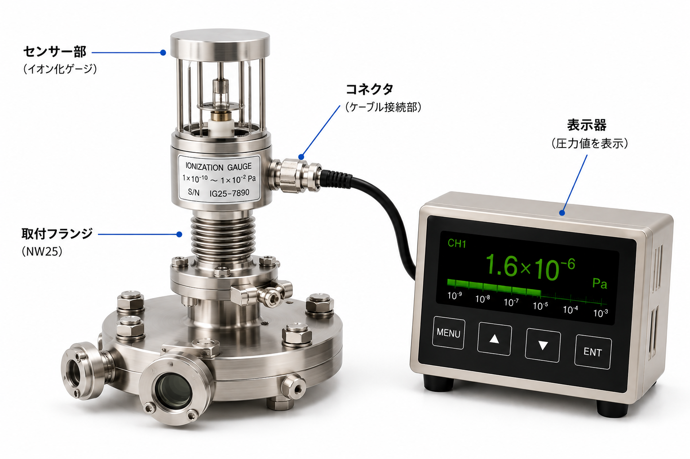

どうやって真空を測る？
03では、真空ポンプで気体を外へ排出して真空をつくることを学びました。では、どこまで圧力が下がったのかは、どうやって確認するのでしょうか。
1. 真空は目で見ても分からない
真空チャンバーの中を見ただけでは、圧力がどこまで下がっているかは判断できません。そこで真空計のセンサーをチャンバーや配管に取り付け、測定した圧力を表示器などで数値として確認します。

2. 真空計は「圧力」を測る
真空計が測っているのは圧力です。真空の圧力は、主にPa（パスカル）という単位で表します。
表示器ではこう見えます
例えば 2.3E-04 Pa のように表示されます。真空では、大気圧付近から非常に低い圧力まで広い範囲を扱います。そのため、1種類の真空計ですべてを測るのではなく、測りたい圧力範囲に合った真空計を使い分けます。
比較的高い圧力側
気体の熱伝導など、圧力によって変化する性質を利用する真空計があります。より低い圧力側
気体を電離したときに得られる電気的な信号などを利用する真空計があります。3. 真空計にはどんな種類がある？
真空計にはさまざまな種類があります。ここでは、よく使われる代表的な3つを見てみましょう。
ピラニ真空計
気体による熱の伝わり方を利用して測ります。
キャパシタンスマノメータ
薄い膜（ダイアフラム）の変形を利用して測ります。
電離真空計
気体をイオン化したときの電気信号を利用して測ります。
4. ピラニ真空計
加熱したセンサーから気体へ逃げる熱の量が、圧力によって変わることを利用して測定します。

5. キャパシタンスマノメータ
圧力によって薄い膜（ダイアフラム）がわずかに変形することを利用して測定します。気体の種類に影響されにくいことが特徴です。

6. 電離真空計
気体をイオン化し、そこから得られる電気信号を利用して圧力を測定します。高真空など、非常に低い圧力の測定に使われます。

7. 真空計の圧力領域を比べてみよう
真空計は、測りたい圧力領域や気体、必要な精度に合わせて使い分けます。色のついた範囲は、それぞれの真空計が使われるおおよその圧力領域を表しています。
マノメータ
ポイント：どれか1つが常に優れているわけではありません。測りたい圧力範囲、気体、必要な精度などに合わせて選びます。
真空の状態は1種類の真空計だけですべて測れるわけではありません。圧力が下がっていく途中で、測定に適した真空計を使い分けることが大切です。
※ 上図は方式ごとの一般的な使い分けを示す目安です。実際の測定範囲は真空計の方式・仕様・製品によって異なります。
8. 「つくる」と「測る」はセット
真空ポンプ
真空をつくるチャンバー内の気体を外へ排出し、圧力を下げます。
真空計
真空を測る圧力を測り、目的の真空状態になったか確認します。
密閉する → 真空ポンプで排気する → 圧力が下がる → 真空計で測る
真空装置では、真空を「つくる」だけでなく、「測って確認する」ことが重要です。